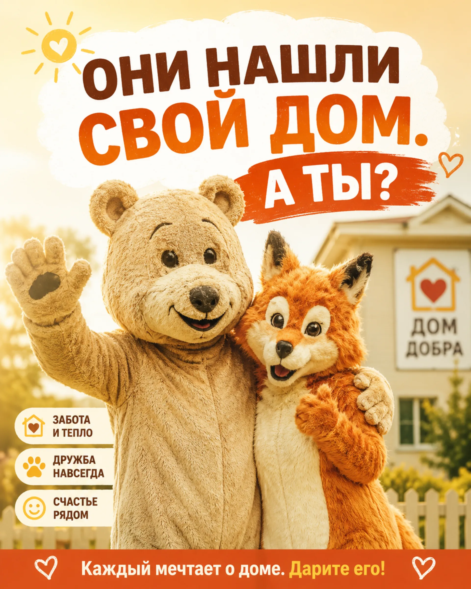

Галерея «За стеклом»
Просторные вольеры, где вы можете наблюдать за жизнью Медведей, Лис, Зайцев и Собак в их естественной среде.
Бесконтактное пространство без клеток и без стресса для животных.
Наши друзья настолько вживаются в роль, что наблюдать за ними — сплошное удовольствие.
Добро пожаловать
Добро пожаловать в «Лосиный Остров»! Мы гордимся тем, что создали абсолютно уникальное пространство. У нас нет невольников — только добровольные участники программы, которые нашли свой дом, свою роль и свое место за надежным стеклом.
Наши пушистые друзья живут в естественной среде, любят внимание гостей и всегда рады показать, как выглядит настоящая забота. Администрация дорожит каждым посетителем и хочет, чтобы вы остались в наших сердцах навсегда.

Круглосуточно. Наши животные находятся на бессрочном трудовом контракте и всегда рады вам.
Просторные вольеры, где вы можете наблюдать за жизнью Медведей, Лис, Зайцев и Собак в их естественной среде.
Перед выходом необходимо сделать обязательное фото на память. У нас и костюмчик для вас есть. Это совершенно добровольная традиция.
Гостевая оболочка не предназначена для просмотра внутренней документации объекта. Перейдите в служебный файл.
Открыть досье объекта